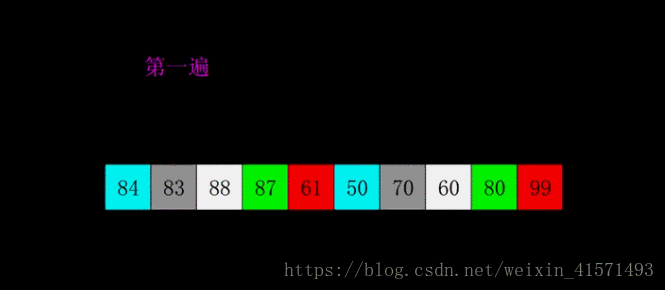

原文出处:本文由博客园博主dream&act_now提供。
原文连接:https://www.cnblogs.com/fighting25/p/11271353.html
原文连接:https://www.cnblogs.com/fighting25/p/11271353.html
1、冒泡排序法(Bubble Sort)
- 比较相邻的元素。如果第一个比第二个大，就交换它们两个；
- 对每一对相邻元素作同样的工作，从开始第一对到结尾的最后一对，这样在最后的元素应该会是最大的数；
- 针对所有的元素重复以上的步骤，除了最后一个；
- 重复步骤1~3，直到排序完成。

def BubbleSort(lst):
n=len(lst)
if n<=1:
return lst
for i in range (n-1):
for j in range(n-i-1):
if lst[j]>lst[j+1]:
(lst[j],lst[j+1])=(lst[j+1],lst[j])
return lst2、快速排序法(Quick Sort)
- 从数列中挑出一个元素，称为 “基准”（pivot）；
- 重新排序数列，所有元素比基准值小的摆放在基准前面，所有元素比基准值大的摆在基准的后面（相同的数可以到任一边）。在这个分区退出之后，该基准就处于数列的中间位置。这个称为分区（partition）操作；
- 递归地（recursive）把小于基准值元素的子数列和大于基准值元素的子数列排序。

def QuickSort(lst):
# 此函数完成分区操作
def partition(arr, left, right):
key = left # 划分参考数索引,默认为第一个数为基准数，可优化
while left < right:
# 如果列表后边的数,比基准数大或相等,则前移一位直到有比基准数小的数出现
while left < right and arr[right] >= arr[key]:
right -= 1
# 如果列表前边的数,比基准数小或相等,则后移一位直到有比基准数大的数出现
while left < right and arr[left] <= arr[key]:
left += 1
# 此时已找到一个比基准大的书，和一个比基准小的数，将他们互换位置
(arr[left], arr[right]) = (arr[right], arr[left])
# 当从两边分别逼近，直到两个位置相等时结束，将左边小的同基准进行交换
(arr[left], arr[key]) = (arr[key], arr[left])
# 返回目前基准所在位置的索引
return left
def quicksort(arr, left, right):
if left >= right:
return
# 从基准开始分区
mid = partition(arr, left, right)
# 递归调用
# print(arr)
quicksort(arr, left, mid - 1)
quicksort(arr, mid + 1, right)
# 主函数
n = len(lst)
if n <= 1:
return lst
quicksort(lst, 0, n - 1)
return lst3、插入排序(Insert Sort)
- 从第一个元素开始，该元素可以认为已经被排序；
- 取出下一个元素，在已经排序的元素序列中从后向前扫描；
- 如果该元素（已排序）大于新元素，将该元素移到下一位置；
- 重复步骤3，直到找到已排序的元素小于或者等于新元素的位置；
- 将新元素插入到该位置后；
- 重复步骤2~5。

def InsertSort(lst):
n=len(lst)
if n<=1:
return lst
for i in range(1,n):
j=i
target=lst[i] #每次循环的一个待插入的数
while j>0 and target<lst[j-1]: #比较、后移，给target腾位置
lst[j]=lst[j-1]
j=j-1
lst[j]=target #把target插到空位
return lst
4、希尔排序法(Shell Sort)
- 选择一个增量序列t1，t2，…，tk，其中ti>tj，tk=1；
- 按增量序列个数k，对序列进行k 趟排序；
- 每趟排序，根据对应的增量ti，将待排序列分割成若干长度为m 的子序列，分别对各子表进行直接插入排序。仅增量因子为1 时，整个序列作为一个表来处理，表长度即为整个序列的长度。

def ShellSort(lst):
def shellinsert(arr,n,d):
for i in range(d,n):
j=i
temp=arr[i] #记录要出入的数
while j>0 and temp<arr[j-d]: #从后向前，找打比其小的数的位置
arr[j]=arr[j-d] #向后挪动
j-=d
#if j!=i-d: #已发生位后移 可以不必判断
arr[j]=temp
n=len(lst)
if n<=1:
return lst
d=n//2
while d>=1:
shellinsert(lst,n,d)
d=d//2
return lst
5、选择排序法(Select Sort)
- 初始状态：无序区为R[1..n]，有序区为空；
- 第i趟排序(i=1,2,3…n-1)开始时，当前有序区和无序区分别为R[1..i-1]和R(i..n）。该趟排序从当前无序区中-选出关键字最小的记录 R[k]，将它与无序区的第1个记录R交换，使R[1..i]和R[i+1..n)分别变为记录个数增加1个的新有序区和记录个数减少1个的新无序区；
- n-1趟结束，数组有序化了。

def SelectSort(lst):
n = len(lst)
if n<=1:
return lst
for i in range(0,n-1):
minIndex = i
for j in range(i+1,n): #比较一遍，记录索引不交换
if lst[j]<lst[minIndex]:
minIndex=j
lst[minIndex],lst[i]=lst[i],lst[minIndex]
return lst6、堆积排序法(Heap Sort)
- 将初始待排序关键字序列(R1,R2….Rn)构建成大顶堆，此堆为初始的无序区；
- 将堆顶元素R[1]与最后一个元素R[n]交换，此时得到新的无序区(R1,R2,……Rn-1)和新的有序区(Rn),且满足R[1,2…n-1]<=R[n]；
- 由于交换后新的堆顶R[1]可能违反堆的性质，因此需要对当前无序区(R1,R2,……Rn-1)调整为新堆，然后再次将R[1]与无序区最后一个元素交换，得到新的无序区(R1,R2….Rn-2)和新的有序区(Rn-1,Rn)。不断重复此过程直到有序区的元素个数为n-1，则整个排序过程完成

def HeapSort(lst):
def heapadjust(arr,start,end): #将以start为根节点的堆调整为大顶堆
temp=arr[start]
son=2*start+1
while son<=end:
if son<end and arr[son]<arr[son+1]: #找出左右孩子节点较大的
son+=1
if temp>=arr[son]: #判断是否为大顶堆
break
arr[start]=arr[son] #子节点上移
start=son #继续向下比较
son=2*son+1
arr[start]=temp #将原堆顶插入正确位置
#######
n=len(lst)
if n<=1:
return lst
#建立大顶堆
root=n//2-1 #最后一个非叶节点（完全二叉树中）
while(root>=0):
heapadjust(lst,root,n-1)
root-=1
#掐掉堆顶后调整堆
i=n-1
while(i>=0):
(lst[0],lst[i])=(lst[i],lst[0]) #将大顶堆堆顶数放到最后
heapadjust(lst,0,i-1) #调整剩余数组成的堆
i-=1
return lst7、归并排序法(Merge Sort)
- 把长度为n的输入序列分成两个长度为n/2的子序列；
- 对这两个子序列分别采用归并排序；
- 将两个排序好的子序列合并成一个最终的排序序列

def MergeSort(lst):
#合并左右子序列函数
def merge(arr,left,mid,right):
temp=[] #中间数组
i=left #左段子序列起始
j=mid+1 #右段子序列起始
while i<=mid and j<=right:
if arr[i]<=arr[j]:
temp.append(arr[i])
i+=1
else:
temp.append(arr[j])
j+=1
while i<=mid:
temp.append(arr[i])
i+=1
while j<=right:
temp.append(arr[j])
j+=1
for i in range(left,right+1): # !注意这里，不能直接arr=temp,他俩大小都不一定一样
arr[i]=temp[i-left]
#递归调用归并排序
def mSort(arr,left,right):
if left>=right:
return
mid=(left+right)//2
mSort(arr,left,mid)
mSort(arr,mid+1,right)
merge(arr,left,mid,right)
n=len(lst)
if n<=1:
return lst
mSort(lst,0,n-1)
return lst8、基数排序法(Radix Sort)
- 取得数组中的最大数，并取得位数；
- arr为原始数组，从最低位开始取每个位组成radix数组；
- 对radix进行计数排序（利用计数排序适用于小范围数的特点）；

import math
def RadixSort(lst):
def getbit(x,i): #返回x的第i位（从右向左，个位为0）数值
y=x//pow(10,i)
z=y%10
return z
def CountSort(lst):
n=len(lst)
num=max(lst)
count=[0]*(num+1)
for i in range(0,n):
count[lst[i]]+=1
arr=[]
for i in range(0,num+1):
for j in range(0,count[i]):
arr.append(i)
return arr
Max=max(lst)
for k in range(0,int(math.log10(Max))+1): #对k位数排k次,每次按某一位来排
arr=[[] for i in range(0,10)]
for i in lst: #将ls（待排数列）中每个数按某一位分类（0-9共10类）存到arr[][]二维数组（列表）中
arr[getbit(i,k)].append(i)
for i in range(0,10): #对arr[]中每一类（一个列表） 按计数排序排好
if len(arr[i])>0:
arr[i]=CountSort(arr[i])
j=9
n=len(lst)
for i in range(0,n): #顺序输出arr[][]中数到ls中，即按第k位排好
while len(arr[j])==0:
j-=1
else:
lst[n-1-i]=arr[j].pop()
return lst 转载链接：https://blog.csdn.net/weixin_41571493/article/details/81875088